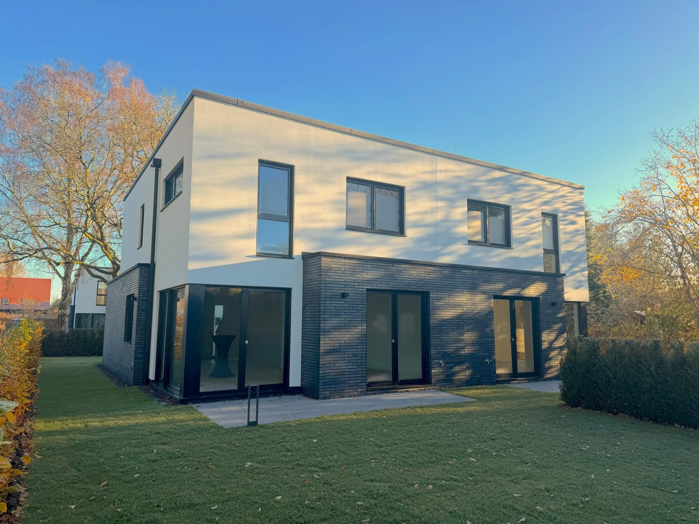

Angebote · Hamburg-Schnelsen
Unsere aktuellen
Projekte.
Hochwertige Architektur, sorgfältige Ausführung und ausgewählte Lagen in Hamburg – so entsteht Wohnraum mit bleibendem Wert.

Fertiggestellt · Hamburg-Schnelsen
Vogt-Bornkast-Weg 6
Fertiggestellt und bezugsfertig: zwei Doppelhäuser mit vier Doppelhaushälften in Hamburg-Schnelsen.
Helle Putzfassaden, dunkler Klinker und große Glasflächen: Jede Haushälfte bietet fünf Zimmer auf rund 134 m² Wohn- und Nutzfläche, eigenen Garten und Terrasse. Preise, Grundrisse und alle Details finden Sie unter „Mehr erfahren“.

Vorschau · Neues Projekt
Wählingsweg 24
6 Eigentumswohnungen in Hamburg-Schnelsen.
Am Wählingsweg 24 entsteht unser nächstes Wohnbauprojekt: eine klassische Stadtvilla mit Klinkerfassade, Gauben und hohen Sprossenfenstern. Alle Details zu Wohnungen, Grundrissen und Ausstattung finden Sie im Exposé.
Persönlich für Sie da
Wir freuen uns
auf Ihre Anfrage.
Sie interessieren sich für eines unserer Projekte? Wir freuen uns auf Ihre Fragen und einen persönlichen Gesprächstermin.